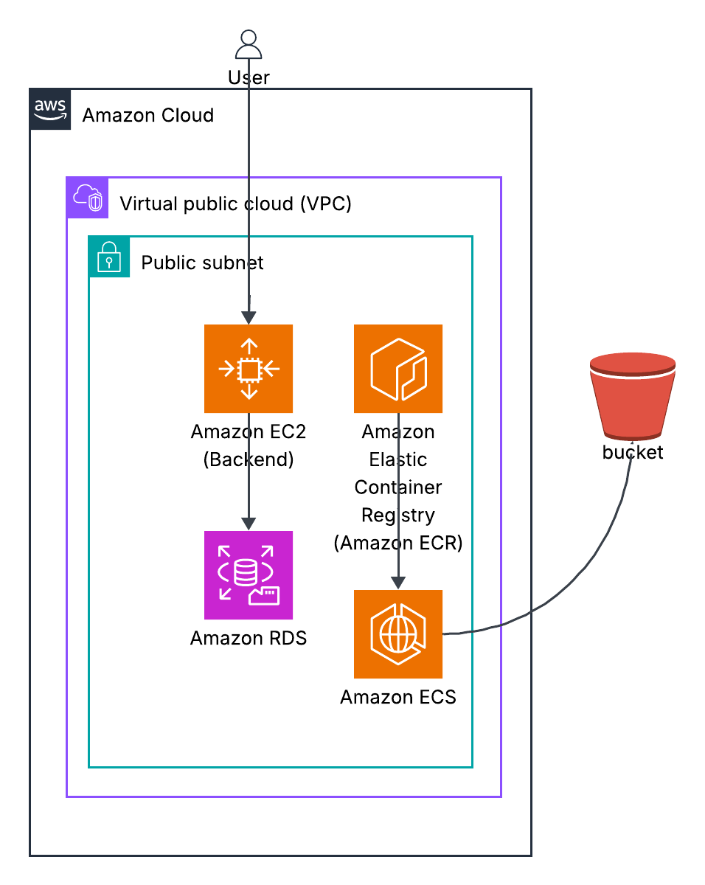

AWS Infrastructure Architecture
Overview
This document describes the complete AWS infrastructure setup for the project, including all cloud services and their interactions.
Infrastructure Diagram

AWS Services
Core Services Used
- Amazon VPC (Virtual Private Cloud)
- Amazon EC2 (Elastic Compute Cloud)
- Amazon RDS (Relational Database Service)
- Amazon ECR (Elastic Container Registry)
- Amazon ECS (Elastic Container Service)
- Amazon S3 (Simple Storage Service)
Network Architecture
Virtual Public Cloud (VPC)
The entire infrastructure is contained within an AWS VPC, providing network isolation and security.
Public Subnet
Contains publicly accessible resources: - Amazon EC2 (Backend): Application server - Amazon ECS: Container orchestration service
Public Subnet Components
Amazon EC2 (Backend) - Hosts the backend application - Publicly accessible via internet - Connects to Amazon RDS for data persistence
Amazon ECS - Container orchestration platform - Pulls images from Amazon ECR - Connects to S3 bucket for storage operations
Service Components
Compute Layer
Amazon EC2 (Backend)
- Purpose: Hosts backend application server
- Network: Public subnet
- Connections:
- Downstream: Amazon RDS
- Upstream: User requests
Amazon ECS (Elastic Container Service)
- Purpose: Container orchestration and management
- Network: Public subnet
- Connections:
- Upstream: Amazon ECR (pulls container images)
- Downstream: S3 bucket (stores outputs)
Container Registry
Amazon ECR (Elastic Container Registry)
- Purpose: Stores Docker container images
- Access: ECS pulls images for deployment
- Integration: Part of the CI/CD pipeline
Database Layer
Amazon RDS (Relational Database Service)
- Purpose: Persistent data storage
- Network: Within public subnet
- Access: Connected to EC2 backend
- Security: Database credentials secured
Storage Layer
S3 Bucket
- Purpose: Object storage for application outputs
- Access: Connected to Amazon ECS
- Use Cases:
- Build artifacts storage
- Static asset hosting
- Application outputs
- Project files